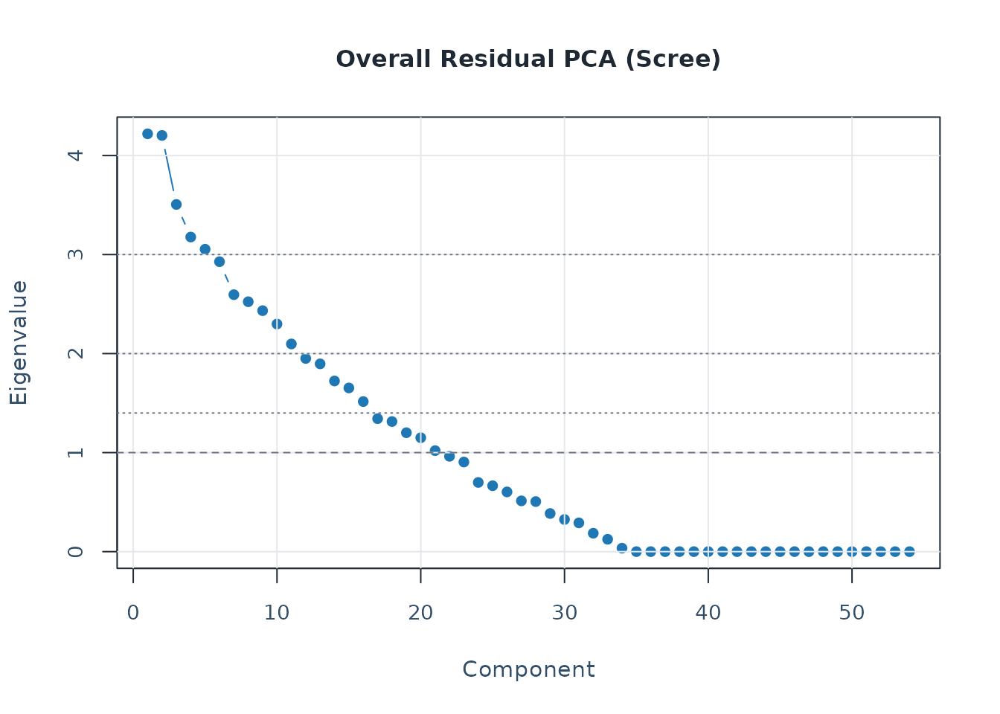
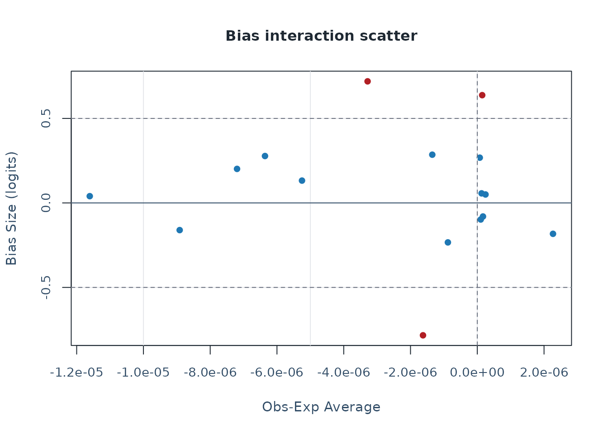

This vignette outlines a reproducible workflow for:
- loading packaged simulation data
- fitting an MFRM with flexible facets
- running diagnostics and residual PCA
- generating APA and visual summary outputs
- moving from fitted models into design simulation and fixed-calibration prediction
For a plot-first companion guide, see the separate
mfrmr-visual-diagnostics vignette.
For speed-sensitive work, a useful pattern is:
- start with
method = "JML"orquad_points = 7 - use
diagnose_mfrm(..., residual_pca = "none")for the first pass - reuse the same diagnostics object in downstream reports and plots
MML and Diagnostic Modes
mfrmr treats MML and JML
differently on purpose.
-
MMLintegrates over the person distribution with Gauss-Hermite quadrature. - The current
MMLbranch optimizes the quadrature-based marginal log-likelihood directly; it is not an EM implementation. -
JMLis often useful for quick exploratory passes, butMMLremains the preferred route for final estimation and fixed-calibration follow-up.
For RSM and PCM, diagnostics now expose two
distinct evidence paths:
-
diagnostic_mode = "legacy"keeps the residual/EAP-based stack. -
diagnostic_mode = "marginal_fit"adds the strict latent-integrated screen. -
diagnostic_mode = "both"is the safest default when you want to inspect both views side by side.
The strict marginal branch is still screening-oriented in the current
release. Use summary(diag)$diagnostic_basis to separate the
legacy residual evidence from the strict marginal evidence rather than
pooling them into one decision.
Load Data
library(mfrmr)
list_mfrmr_data()
#> [1] "example_core" "example_bias" "study1" "study2"
#> [5] "combined" "study1_itercal" "study2_itercal" "combined_itercal"
data("ej2021_study1", package = "mfrmr")
head(ej2021_study1)
#> Study Person Rater Criterion Score
#> 1 Study1 P001 R08 Global_Impression 4
#> 2 Study1 P001 R08 Linguistic_Realization 3
#> 3 Study1 P001 R08 Task_Fulfillment 3
#> 4 Study1 P001 R10 Global_Impression 4
#> 5 Study1 P001 R10 Linguistic_Realization 3
#> 6 Study1 P001 R10 Task_Fulfillment 2
study1_alt <- load_mfrmr_data("study1")
identical(names(ej2021_study1), names(study1_alt))
#> [1] TRUEMinimal Runnable Example
Start with the packaged example_core dataset. It is
intentionally compact, category-complete, and generated from a single
latent trait plus facet main effects so that help-page examples stay
fast without relying on undersized toy data. The same object is also
available via
data("mfrmr_example_core", package = "mfrmr"):
data("mfrmr_example_core", package = "mfrmr")
toy <- mfrmr_example_core
fit_toy <- fit_mfrm(
data = toy,
person = "Person",
facets = c("Rater", "Criterion"),
score = "Score",
method = "JML",
model = "RSM",
maxit = 30
)
diag_toy <- diagnose_mfrm(fit_toy, residual_pca = "none")
summary(fit_toy)$overview
#> # A tibble: 1 × 42
#> Model Method MethodUsed N Persons Facets FacetInteractions
#> <chr> <chr> <chr> <int> <int> <int> <int>
#> 1 RSM JML JMLE 768 48 2 0
#> # ℹ 35 more variables: InteractionParameters <int>, InteractionCells <int>,
#> # InteractionSparseCells <int>, Categories <dbl>, LogLik <dbl>, AIC <dbl>,
#> # BIC <dbl>, Converged <lgl>, Iterations <int>, IterationsBasis <chr>,
#> # MMLEngineRequested <chr>, MMLEngineUsed <chr>, MMLEngineDetail <chr>,
#> # EMIterations <int>, EMConverged <lgl>, EMRelativeChange <dbl>,
#> # OptimizerMethod <chr>, ConvergenceCode <int>, ConvergenceBasis <chr>,
#> # ConvergenceStatus <chr>, ConvergenceReason <chr>, …
summary(diag_toy)$overview
#> # A tibble: 1 × 10
#> Observations Persons Facets Categories Subsets ResidualPCA DiagnosticMode
#> <int> <int> <int> <int> <int> <chr> <chr>
#> 1 768 48 2 4 1 none both
#> # ℹ 3 more variables: Method <chr>, PrecisionTier <chr>, MarginalFit <chr>
names(plot(fit_toy, draw = FALSE))
#> [1] "name" "data"The same fit can then move through the public first-contact route:
res_toy <- mfrm_results(fit_toy)
report_toy <- mfrm_report(res_toy, style = "qc")
summary(res_toy)$next_actions
#> Priority Area
#> 1 1 Overview
#> 2 2 Triage
#> 3 3 Diagnostics
#> 4 4 Visual diagnostics
#> 5 5 Precision
#> 6 6 Reporting
#> 7 11 Tables
#> Action
#> 1 Read the compact results summary.
#> 2 Read the first-screen triage before branching.
#> 3 Review diagnostic key warnings before report drafting.
#> 4 Open the QC dashboard before drilling into individual tables.
#> 5 Inspect fit, separation, reliability, and ZSTD wording boundaries.
#> 6 Use the reporting checklist as the manuscript-routing surface.
#> 7 Create an appendix-ready summary-table bundle.
#> Route
#> 1 summary(res)
#> 2 summary(res)$triage
#> 3 summary(res$diagnostics)$key_warnings
#> 4 plot(res, type = "qc", preset = "publication")
#> 5 summary(res$components$precision_review)
#> 6 summary(res$components$reporting_checklist)
#> 7 build_summary_table_bundle(res)
#> Reason
#> 1 Confirms input mode, model, method, section status, table coverage, and plot routes.
#> 2 Triage orders unavailable, review, information, and OK signals across diagnostics, tables, plots, and reporting surfaces.
#> 3 Diagnostic warnings identify the highest-priority fit, precision, residual, or category follow-up surfaces.
#> 4 The QC route gives a first visual check of fit, residual, and category surfaces.
#> 5 Precision review keeps fit-size, standardized fit, and separation evidence in separate reporting lanes.
#> 6 Checklist rows identify report-ready, missing, and caveated sections.
#> 7 The bundle exposes table roles, plot readiness, and conservative appendix presets.
summary(report_toy)$overview
#> Style OverallStatus FirstAction ReviewAreas CaveatAreas OptionalAreas
#> 1 qc review Start with Fit. 2 0 3
#> UnavailableAreas OkAreas
#> 1 0 0
#> SourceInclude
#> 1 fit, diagnostics, tables, precision, reporting, categories, plots
export_dir <- file.path(tempdir(), "mfrmr-workflow-export")
export_toy <- export_mfrm_results(
res_toy,
output_dir = export_dir,
include = c("default", "report"),
overwrite = TRUE
)
head(export_toy$written_files)
#> Component Format
#> 1 summary_overview csv
#> 2 summary_status csv
#> 3 summary_component_index csv
#> 4 summary_table_index csv
#> 5 summary_plot_map csv
#> 6 summary_triage csv
#> Path
#> 1 /tmp/RtmptPm9l3/mfrmr-workflow-export/mfrmr_results_summary_overview.csv
#> 2 /tmp/RtmptPm9l3/mfrmr-workflow-export/mfrmr_results_summary_status.csv
#> 3 /tmp/RtmptPm9l3/mfrmr-workflow-export/mfrmr_results_summary_component_index.csv
#> 4 /tmp/RtmptPm9l3/mfrmr-workflow-export/mfrmr_results_summary_table_index.csv
#> 5 /tmp/RtmptPm9l3/mfrmr-workflow-export/mfrmr_results_summary_plot_map.csv
#> 6 /tmp/RtmptPm9l3/mfrmr-workflow-export/mfrmr_results_summary_triage.csv
#> Note
#> 1
#> 2
#> 3
#> 4
#> 5
#> 6Diagnostics and Reporting
t4_toy <- unexpected_response_table(
fit_toy,
diagnostics = diag_toy,
abs_z_min = 1.5,
prob_max = 0.4,
top_n = 10
)
t12_toy <- fair_average_table(fit_toy, diagnostics = diag_toy)
t13_toy <- bias_interaction_report(
estimate_bias(fit_toy, diag_toy,
facet_a = "Rater", facet_b = "Criterion",
max_iter = 2),
top_n = 10
)
class(summary(t4_toy))
#> [1] "summary.mfrm_bundle"
class(summary(t12_toy))
#> [1] "summary.mfrm_bundle"
class(summary(t13_toy))
#> [1] "summary.mfrm_bundle"
names(plot(t4_toy, draw = FALSE))
#> [1] "name" "data"
names(plot(t12_toy, draw = FALSE))
#> [1] "name" "data"
names(plot(t13_toy, draw = FALSE))
#> [1] "name" "data"
chk_toy <- reporting_checklist(fit_toy, diagnostics = diag_toy)
subset(
chk_toy$checklist,
Section == "Visual Displays",
c("Item", "DraftReady", "NextAction")
)
#> Item DraftReady
#> 25 Wright map TRUE
#> 26 QC / facet dashboard TRUE
#> 27 Residual PCA visuals FALSE
#> 28 Connectivity / design-matrix visual TRUE
#> 29 Inter-rater / displacement visuals TRUE
#> 30 Strict marginal visuals FALSE
#> 31 Bias / DIF visuals FALSE
#> 32 Precision / information curves FALSE
#> 33 Fit/category visuals TRUE
#> NextAction
#> 25 Include a Wright map when the manuscript benefits from a shared-scale targeting display.
#> 26 Use the dashboard as a first-pass triage view, then move to the specific follow-up plot behind each flag.
#> 27 Run residual PCA if you want scree/loadings visuals for residual-structure follow-up.
#> 28 Use the design-matrix view to support linkage and comparability claims.
#> 29 Use displacement and inter-rater views to localize QC issues after dashboard screening.
#> 30 For MML reporting runs, call diagnose_mfrm(..., diagnostic_mode = "both") to enable strict marginal follow-up visuals where supported.
#> 31 Run bias or DIF screening before discussing interaction-level visuals.
#> 32 Use information curves descriptively and keep the current precision-tier caveat in the narrative.
#> 33 Use category curves and fit visuals as local descriptive follow-up after QC screening.Fit and Diagnose with Full Data
For a realistic analysis, use the packaged Study 1 dataset:
fit <- fit_mfrm(
data = ej2021_study1,
person = "Person",
facets = c("Rater", "Criterion"),
score = "Score",
method = "MML",
model = "RSM",
quad_points = 7
)
diag <- diagnose_mfrm(
fit,
residual_pca = "none"
)
summary(fit)
#> Many-Facet Rasch Model Summary
#> Model: RSM | Method: MML | N: 1842 | Persons: 307 | Facets: 2 | Categories: 4
#> MML engine: direct (requested: direct)
#>
#> Status
#> - Overall status: usable_fit
#> - Convergence: converged (severity: pass, sup-norm: 0.002)
#> - Estimation path: RSM / direct
#> - Reporting readiness: ready_for_diagnostics_and_reporting_follow_up
#>
#> Key warnings
#> - No population model was requested; current MML output uses the package's legacy unconditional prior.
#>
#> Next actions
#> - Run `diagnose_mfrm(fit, diagnostic_mode = "both")` for element-level fit review.
#> - Use `plot(fit, type = "wright", preset = "publication")` for targeting and scale review.
#> - After diagnostics, use `reporting_checklist(fit, diagnostics = diagnostics)` for reporting readiness.
#>
#> Fit overview
#> LogLik: -2102.731 | AIC: 4247.462 | BIC: 4363.353
#> Converged: Yes | Status: converged | Basis: optimizer_gradient | Fn evals: 95 | Gr evals: 26
#> Terminal gradient: sup-norm = 0.002 | RMS = 0.001 | Review tol = 0
#> Optimization note: Optimizer returned convergence code 0.
#>
#> Population basis
#> PopulationModel PosteriorBasis Formula PersonRows DesignColumns
#> FALSE legacy_mml <NA> NA NA
#> CodingVariables ContrastVariables Policy ResidualVariance OmittedPersons
#> <NA> NA 0
#> OmittedRows
#> 0
#>
#> Facet overview
#> Facet Levels MeanEstimate SDEstimate MinEstimate MaxEstimate Span
#> Criterion 3 0 0.693 -0.799 0.431 1.23
#> Rater 18 0 0.667 -0.948 1.622 2.57
#>
#> Person measure distribution
#> Persons Mean SD Median Min Max Span MeanPosteriorSD
#> 307 0.414 0.812 0.436 -1.451 2.385 3.835 0.482
#>
#> Targeting (Person vs facet means; sum-to-zero ID makes Targeting = Person mean)
#> Facet PersonMean FacetMean Targeting PersonSD FacetSD SpreadRatio
#> Criterion 0.414 0 0.414 0.812 0.693 1.172
#> Rater 0.414 0 0.414 0.812 0.667 1.219
#>
#> Step parameter summary
#> Steps Min Max Span Monotonic
#> 3 -1.093 0.958 2.051 TRUE
#>
#> Estimation settings
#> StepFacet SlopeFacet NoncenterFacet WeightColumn QuadPoints RatingMin
#> <NA> <NA> Person <NA> 7 1
#> RatingMax RatingRangeSource RatingMinSource RatingMaxSource DummyFacets
#> 4 observed observed observed
#> PositiveFacets FacetInteractions UnusedScoreCategories
#>
#> UnusedScoreCategoryCount UnusedScoreCategoryType
#> 0 none
#>
#> Most extreme facet levels (|estimate|)
#> Facet Level Estimate
#> Rater R13 1.622
#> Rater R08 -0.948
#> Rater R09 -0.917
#> Rater R06 0.892
#> Criterion Global_Impression -0.799
#>
#> Highest person measures
#> Person Estimate SD PosteriorSD SE Extreme
#> P157 2.385 0.466 0.466 0.466 none
#> P239 2.349 0.543 0.543 0.543 high
#> P135 2.265 0.469 0.469 0.469 none
#> P018 2.121 0.613 0.613 0.613 high
#> P209 2.013 0.644 0.644 0.644 high
#>
#> Lowest person measures
#> Person Estimate SD PosteriorSD SE Extreme
#> P136 -1.451 0.556 0.556 0.556 none
#> P173 -1.400 0.526 0.526 0.526 none
#> P159 -1.350 0.579 0.579 0.579 none
#> P048 -1.333 0.468 0.468 0.468 none
#> P089 -1.275 0.396 0.396 0.396 none
#>
#> Paper reporting map
#> Area CoveredHere
#> Model identification / convergence yes
#> Data structure / missingness no
#> Reliability / fit / residual PCA no
#> Category functioning partial
#> Bias / DIF / interaction checks no
#> Draft reporting / checklist no
#> CompanionOutput
#> summary(fit)
#> summary(describe_mfrm_data(...))
#> summary(diagnose_mfrm(fit))
#> rating_scale_table() / category_structure_report() / category_curves_report()
#> summary(estimate_bias(...)) / analyze_dff() / related bundle summaries
#> reporting_checklist() / summary(build_apa_outputs(...))
#>
#> Notes
#> - No population model was requested; current MML output uses the package's legacy unconditional prior.
summary(diag)
#> Many-Facet Rasch Diagnostics Summary
#> Observations: 1842 | Persons: 307 | Facets: 2 | Categories: 4 | Subsets: 1
#> Residual PCA mode: none
#> Method: MML | Precision tier: model_based
#> Diagnostic mode: both | Strict marginal fit: available
#>
#> Status
#> - Overall status: follow_up_needed
#> - Diagnostic path: both
#> - Strict marginal fit: available
#> - Precision tier: model_based
#> - Primary screen: Read strict marginal fit first; use legacy residuals for continuity and follow-up.
#>
#> Key warnings
#> - Unexpected responses flagged: 100.
#> - Flagged displacement levels: 40.
#> - MnSq misfit flagged 130 element(s) outside 0.5-1.5 (Linacre threshold).
#> - MnSq misfit: Person:P020 (Infit=0.03, Outfit=0.03; outside 0.5-1.5).
#> - MnSq misfit: Person:P203 (Infit=0.04, Outfit=0.07; outside 0.5-1.5).
#>
#> Next actions
#> - Inspect `diagnostic_basis` before comparing legacy residual evidence with strict marginal evidence.
#> - Review `top_marginal_cells` and `rating_scale_table(..., diagnostics = diag)` for first-order strict marginal follow-up.
#> - Review `top_marginal_pairs` for pairwise local-dependence follow-up.
#> - Use `unexpected_response_table()` / `plot_unexpected()` and `displacement_table()` / `plot_displacement()` for case-level follow-up.
#>
#> Overall fit
#> Infit Outfit InfitZSTD OutfitZSTD DF_Infit DF_Outfit
#> 0.811 0.786 -4.629 -7.01 1058.852 1842
#>
#> Fit ZSTD standardization
#> PrimaryFitDfMethod PrimaryZSTDColumns
#> engine InfitZSTD / OutfitZSTD use engine df
#> EngineDf
#> DF_Infit = sum(Var * Weight); DF_Outfit = sum(Weight)
#> FacetsDf
#> DF = 2 / q^2 using the Wright-Masters/FACETS fourth-moment approximation
#> FacetsColumnsAvailable ZSTDTransform FacetsZSTDCap
#> FALSE Wilson-Hilferty NA
#>
#> Diagnostic basis guide
#> DiagnosticPath Component
#> legacy_residual_fit element_residual_fit
#> strict_marginal_fit first_order_category_counts
#> strict_pairwise_local_dependence pairwise_local_dependence
#> posterior_predictive_follow_up posterior_predictive_follow_up
#> Status Basis
#> computed plugin_residuals_and_eap_tables
#> computed latent_integrated_first_order_counts
#> computed latent_integrated_second_order_agreement
#> planned_not_implemented posterior_predictive_replication
#> PrimaryStatistics
#> Infit / Outfit / ZSTD / PTMEA / residual QC bundles
#> category residuals / standardized residuals / RMSD
#> exact and adjacent agreement residuals
#> replicated-data discrepancy checks
#> ReportingUse
#> legacy_compatibility_screen
#> screening_only
#> screening_only
#> screening_only
#> InterpretationNote
#> Legacy fit statistics use plug-in residual machinery and should not be interpreted as latent-integrated marginal evidence.
#> Strict marginal fit integrates over the latent distribution and is the preferred strict screen for category-level misfit in the current release.
#> Strict pairwise local-dependence checks are exploratory follow-ups to first-order marginal flags, not standalone inferential tests.
#> Posterior predictive checking is reserved for corroborating strict marginal flags and practical-significance review in a later release.
#>
#> Precision basis
#> Method Converged PrecisionTier SupportsFormalInference HasFallbackSE
#> MML TRUE model_based TRUE FALSE
#> PersonSEBasis NonPersonSEBasis
#> Posterior SD (EAP) Observed information (MML)
#> CIBasis
#> Normal interval from model-based SE
#> ReliabilityBasis
#> Observed variance with model-based and fit-adjusted error bounds
#> HasFitAdjustedSE HasSamplePopulationCoverage
#> TRUE TRUE
#> RecommendedUse
#> Use for primary reporting of SE, CI, and reliability in this package.
#>
#> Facet precision and spread
#> Facet Levels Separation Strata Reliability RealSeparation RealStrata
#> Criterion 3 14.918 20.223 0.996 14.918 20.223
#> Person 307 1.322 2.096 0.636 1.226 1.968
#> Rater 18 3.121 4.495 0.907 3.110 4.480
#> RealReliability MeanInfit MeanOutfit
#> 0.996 0.810 0.786
#> 0.600 0.798 0.786
#> 0.906 0.813 0.786
#>
#> Facet variability (fixed-effect chi-square; null = all elements equal)
#> Facet Levels MeanMeasure SD FixedChiSq FixedDF FixedProb RandomChiSq
#> Criterion 3 0.000 0.693 413.140 2 0 1.999
#> Person 307 0.414 0.812 888.264 306 0 302.435
#> Rater 18 0.000 0.667 248.678 17 0 17.049
#> RandomDF RandomProb
#> 1 0.157
#> 305 0.531
#> 16 0.382
#>
#> Inter-rater agreement summary
#> RaterFacet Raters Pairs OpportunityCount ExactAgreement ExpectedExactAgreement
#> Rater 18 153 921 0.362 0.355
#> AgreementMinusExpected AdjacentAgreement MeanAbsDiff MeanCorr RaterSeparation
#> 0.007 0.805 0.858 0.325 3.121
#> RaterReliability
#> 0.907
#>
#> Largest |ZSTD| rows
#> Facet Level Infit Outfit InfitZSTD OutfitZSTD DF_Infit
#> Criterion Global_Impression 0.799 0.744 -2.590 -4.913 292.461
#> Rater R08 0.702 0.661 -2.434 -4.103 110.307
#> Criterion Linguistic_Realization 0.803 0.798 -2.907 -3.799 382.619
#> Person P020 0.028 0.027 -2.744 -3.436 4.080
#> Criterion Task_Fulfillment 0.830 0.816 -2.481 -3.416 383.772
#> Rater R10 0.738 0.726 -2.187 -2.939 118.696
#> Person P203 0.041 0.073 -2.500 -2.836 3.885
#> Person P098 2.328 3.387 1.549 2.800 3.539
#> Rater R05 0.745 0.750 -1.916 -2.522 98.234
#> Person P056 0.075 0.125 -1.727 -2.407 2.688
#> DF_Outfit AbsZ
#> 614 4.913
#> 228 4.103
#> 614 3.799
#> 6 3.436
#> 614 3.416
#> 192 2.939
#> 6 2.836
#> 6 2.800
#> 174 2.522
#> 6 2.407
#>
#> MnSq misfit (outside 0.5-1.5 Linacre band; 130 element(s))
#> Facet Level Infit InfitZSTD Outfit OutfitZSTD
#> Person P001 0.300 -1.082 0.307 -1.497
#> Person P005 0.467 -0.599 0.554 -0.736
#> Person P007 0.345 -0.369 0.277 -1.616
#> Person P012 1.537 0.841 1.569 1.035
#> Person P016 0.328 -1.052 0.332 -1.405
#> Person P017 0.202 -1.530 0.214 -1.896
#> Person P018 0.394 -0.361 0.325 -1.432
#> Person P020 0.028 -2.744 0.027 -3.436
#> Person P022 1.773 1.141 1.638 1.121
#> Person P023 0.478 -0.378 0.417 -1.122
#> Person P025 0.323 -1.105 0.349 -1.345
#> Person P026 0.440 -0.703 0.481 -0.932
#> Person P030 0.487 -0.703 0.475 -0.950
#> Person P035 0.356 -0.972 0.387 -1.218
#> Person P038 1.641 0.979 1.734 1.239
#> Person P039 0.263 -1.262 0.288 -1.573
#> Person P043 0.359 -1.009 0.382 -1.234
#> Person P046 0.251 -1.288 0.283 -1.594
#> Person P048 1.972 1.218 2.090 1.640
#> Person P049 0.436 -0.418 0.350 -1.341
#> Person P052 1.772 1.105 1.819 1.339
#> Person P055 1.696 1.007 1.443 0.868
#> Person P056 0.075 -1.727 0.125 -2.407
#> Person P057 0.329 -0.399 0.276 -1.622
#> Person P058 0.352 -1.055 0.353 -1.331
#> Person P062 0.249 -1.331 0.296 -1.541
#> Person P066 0.379 -0.979 0.390 -1.208
#> Person P067 0.499 -0.606 0.558 -0.726
#> Person P073 0.476 -0.499 1.022 0.231
#> Person P074 0.400 -0.773 0.486 -0.919
#> Person P075 0.350 -0.848 0.422 -1.106
#> Person P076 0.162 -1.594 0.185 -2.042
#> Person P079 0.521 -0.503 0.493 -0.900
#> Person P082 0.273 -0.987 0.279 -1.608
#> Person P083 1.132 0.414 1.559 1.022
#> Person P084 0.446 -0.354 0.372 -1.266
#> Person P085 0.208 -1.559 0.201 -1.959
#> Person P086 0.250 -1.382 0.270 -1.646
#> Person P090 0.278 -1.204 0.313 -1.474
#> Person P098 2.328 1.549 3.387 2.800
#> Person P102 0.146 -1.684 0.202 -1.956
#> Person P103 0.346 -1.071 0.361 -1.302
#> Person P104 1.783 1.128 1.616 1.094
#> Person P105 0.185 -1.157 0.233 -1.804
#> Person P106 0.444 -0.782 0.468 -0.969
#> Person P108 0.563 -0.215 0.480 -0.935
#> Person P112 0.297 -0.861 0.322 -1.444
#> Person P113 0.137 -1.702 0.201 -1.961
#> Person P114 0.239 -1.068 0.261 -1.684
#> Person P115 0.461 -0.738 0.465 -0.978
#> Person P116 0.549 -0.268 0.472 -0.959
#> Person P117 1.817 1.145 1.742 1.248
#> Person P118 0.255 -1.002 0.292 -1.558
#> Person P124 1.214 0.517 1.582 1.051
#> Person P125 0.482 -0.493 0.440 -1.050
#> Person P127 0.431 -0.395 0.359 -1.311
#> Person P129 0.487 -0.700 0.502 -0.874
#> Person P132 0.271 -1.244 0.296 -1.541
#> Person P133 0.480 -0.686 0.498 -0.884
#> Person P135 0.483 -0.400 0.410 -1.143
#> Person P136 0.412 -0.553 0.390 -1.206
#> Person P137 0.468 -0.606 0.450 -1.022
#> Person P138 1.717 1.078 1.567 1.032
#> Person P140 0.440 -0.670 0.433 -1.072
#> Person P141 2.353 1.591 2.441 1.992
#> Person P142 1.864 1.219 1.772 1.284
#> Person P143 1.552 0.895 1.714 1.215
#> Person P146 0.414 -0.670 0.485 -0.923
#> Person P148 0.323 -1.138 0.319 -1.452
#> Person P149 0.446 -0.354 0.372 -1.266
#> Person P155 0.451 -0.644 0.443 -1.042
#> Person P156 0.399 -0.453 0.341 -1.373
#> Person P159 0.222 -0.746 0.235 -1.799
#> Person P161 0.541 -0.256 0.462 -0.986
#> Person P164 0.483 -0.685 0.495 -0.892
#> Person P167 0.330 -1.085 0.331 -1.411
#> Person P170 0.256 -1.221 0.308 -1.494
#> Person P175 0.275 -0.939 0.302 -1.519
#> Person P176 0.500 -0.309 0.429 -1.086
#> Person P177 0.202 -1.530 0.214 -1.896
#> Person P178 0.455 -0.617 0.439 -1.056
#> Person P182 0.448 -0.795 0.470 -0.962
#> Person P188 0.435 -0.261 0.312 -1.478
#> Person P190 0.306 -1.122 0.306 -1.503
#> Person P191 0.371 -0.840 0.362 -1.300
#> Person P193 0.297 -0.861 0.322 -1.444
#> Person P195 0.419 -0.764 0.445 -1.037
#> Person P196 2.064 1.214 1.405 0.816
#> Person P198 0.526 -0.201 0.443 -1.042
#> Person P199 1.999 1.208 1.436 0.858
#> Person P203 0.041 -2.500 0.073 -2.836
#> Person P204 0.454 -0.411 0.389 -1.212
#> Person P207 0.480 -0.696 0.468 -0.969
#> Person P208 0.422 -0.470 0.371 -1.269
#> Person P209 0.463 -0.226 0.323 -1.439
#> Person P211 1.900 1.223 1.745 1.252
#> Person P215 0.315 -1.093 0.325 -1.431
#> Person P217 0.436 -0.578 0.536 -0.783
#> Person P219 2.017 1.302 2.047 1.594
#> Person P222 0.343 -0.802 0.323 -1.439
#> Person P223 0.415 -0.723 0.645 -0.514
#> Person P224 1.621 0.980 1.601 1.075
#> Person P227 0.333 -1.040 0.336 -1.392
#> Person P235 1.589 0.894 1.448 0.875
#> Person P237 0.499 -0.349 0.436 -1.065
#> Person P239 0.712 0.052 0.420 -1.113
#> Person P242 0.391 -0.890 0.380 -1.240
#> Person P243 1.464 0.809 1.613 1.090
#> Person P244 0.375 -0.984 0.377 -1.250
#> Person P247 1.585 0.849 1.429 0.849
#> Person P250 0.329 -1.114 0.308 -1.495
#> Person P255 0.518 -0.421 0.465 -0.978
#> Person P261 0.208 -1.541 0.228 -1.830
#> Person P262 1.682 1.006 1.639 1.122
#> Person P264 0.426 -0.706 0.598 -0.625
#> Person P266 0.433 -0.783 0.458 -0.999
#> Person P267 0.484 -0.675 0.505 -0.866
#> Person P269 0.451 -0.614 0.434 -1.068
#> Person P271 1.456 0.810 1.502 0.947
#> Person P272 0.208 -1.467 0.232 -1.812
#> Person P277 0.359 -0.921 0.358 -1.314
#> Person P278 0.483 -0.503 0.442 -1.044
#> Person P281 0.326 -1.086 0.352 -1.336
#> Person P282 1.770 1.094 1.670 1.161
#> Person P285 1.526 0.873 1.472 0.907
#> Person P287 0.578 -0.307 0.500 -0.881
#> Person P290 0.462 -0.549 0.431 -1.080
#> Person P293 0.480 -0.624 0.477 -0.944
#> Person P300 0.427 -0.631 0.416 -1.124
#> Person P306 1.717 1.075 1.589 1.060
#>
#> Category usage (Count + AvgMeasure within each observed score)
#> Category Count AvgMeasure Disordering
#> 1 215 -0.404
#> 2 451 -0.005
#> 3 525 0.450
#> 4 651 0.945
#>
#> Strict marginal fit
#> Available Method Model Basis ObservationCount
#> TRUE MML RSM latent_integrated_first_order_counts 1842
#> CategoryCount OverallRMSD OverallMaxAbsStdResidual StepGroupsFlagged
#> 4 0.016 3.137 1
#> FacetLevelsFlagged PairwiseAvailable PairwiseFlaggedLevelPairs
#> 3 TRUE 90
#> PosteriorPredictiveFollowUp InferenceTier SupportsFormalInference
#> planned_not_implemented exploratory FALSE
#> FormalInferenceEligible PrimaryReportingEligible ClassificationSystem
#> FALSE FALSE screening
#> ReportingUse StatisticLabel
#> screening_only strict marginal fit screen
#> LiteratureSeries
#> limited_information_inspired_marginal_screen + agreement_screen_informed_by_generalized_residual_logic
#> InterpretationBasis
#> latent_integrated
#> FollowUpRecommendation
#> Use as screening evidence and corroborate with companion diagnostics, model comparisons, and substantive design review.
#>
#> Largest marginal residual cells
#> CellType StepFacet Facet Level Category ObservedCount
#> step_facet Common <NA> <NA> 1 215
#> facet_level <NA> Rater R17 3 14
#> facet_level <NA> Rater R17 4 36
#> step_facet Common <NA> <NA> 4 651
#> facet_level <NA> Rater R18 2 19
#> facet_level <NA> Criterion Linguistic_Realization 1 93
#> facet_level <NA> Criterion Task_Fulfillment 1 99
#> facet_level <NA> Rater R14 1 0
#> facet_level <NA> Rater R15 1 1
#> facet_level <NA> Rater R08 2 45
#> ExpectedCount PropDiff StdResidual AbsStdResidual
#> 255.396 -0.022 -3.137 3.137
#> 24.202 -0.121 -2.508 2.508
#> 26.894 0.108 2.476 2.476
#> 610.605 0.022 2.356 2.356
#> 28.274 -0.075 -2.100 2.100
#> 108.761 -0.026 -1.896 1.896
#> 114.751 -0.026 -1.858 1.858
#> 2.690 -0.064 -1.847 1.847
#> 3.788 -0.186 -1.796 1.796
#> 35.807 0.040 1.789 1.789
#>
#> Strict pairwise local dependence
#> Facet LevelPairs ContextPairs MeanAbsExactGap MeanAbsAdjacentGap
#> Criterion 3 1842 0.007 0.008
#> Rater 111 921 0.122 0.097
#> MaxAbsExactStdResidual MaxAbsAdjacentStdResidual OpportunityWeight
#> 0.624 0.923 1842
#> 2.547 2.674 921
#> FlaggedLevelPairs InferenceTier SupportsFormalInference
#> 0 exploratory FALSE
#> 90 exploratory FALSE
#> FormalInferenceEligible PrimaryReportingEligible ClassificationSystem
#> FALSE FALSE screening
#> FALSE FALSE screening
#> ReportingUse StatisticLabel
#> screening_only strict pairwise agreement residual
#> screening_only strict pairwise agreement residual
#> LiteratureSeries
#> agreement_screen_informed_by_generalized_residual_logic
#> agreement_screen_informed_by_generalized_residual_logic
#>
#> Largest marginal pairwise residuals
#> Facet Level1 Level2 LevelPairCount OpportunityWeight ExactAgreement
#> Rater R05 R10 30 30 0.167
#> Rater R01 R12 6 6 0.833
#> Rater R02 R08 9 9 0.000
#> Rater R13 R16 6 6 0.667
#> Rater R11 R12 12 12 0.083
#> Rater R05 R12 6 6 0.000
#> Rater R03 R09 12 12 0.167
#> Rater R08 R17 18 18 0.611
#> Rater R04 R12 6 6 0.667
#> Rater R02 R04 9 9 0.111
#> ExpectedExactAgreement ExactGap ExactStdResidual AdjacentAgreement
#> 0.389 -0.222 -2.547 0.767
#> 0.355 0.479 2.482 1.000
#> 0.377 -0.377 -2.391 0.778
#> 0.252 0.415 2.348 0.667
#> 0.362 -0.279 -2.029 0.667
#> 0.351 -0.351 -1.818 0.667
#> 0.412 -0.246 -1.774 0.833
#> 0.417 0.194 1.752 0.944
#> 0.336 0.330 1.727 0.833
#> 0.382 -0.270 -1.716 0.778
#> ExpectedAdjacentAgreement AdjacentGap AdjacentStdResidual Flagged
#> 0.827 -0.060 -0.878 TRUE
#> 0.803 0.197 1.225 TRUE
#> 0.800 -0.022 -0.167 TRUE
#> 0.673 -0.006 -0.034 TRUE
#> 0.819 -0.152 -1.376 TRUE
#> 0.800 -0.133 -0.823 TRUE
#> 0.838 -0.005 -0.043 TRUE
#> 0.821 0.124 1.406 TRUE
#> 0.780 0.053 0.315 TRUE
#> 0.807 -0.029 -0.228 TRUE
#>
#> Strict marginal guidance
#> Component StatisticLabel
#> first_order_category_counts strict marginal category residual
#> pairwise_local_dependence strict pairwise agreement residual
#> posterior_predictive_follow_up posterior predictive follow-up
#> LiteratureSeries
#> limited_information_inspired_marginal_screen
#> agreement_screen_informed_by_generalized_residual_logic
#> posterior_predictive_model_check_follow_up
#> PrimaryRole InferenceTier
#> category / facet screening exploratory
#> local dependence follow-up exploratory
#> misfit corroboration / practical-significance follow-up exploratory
#> SupportsFormalInference FormalInferenceEligible PrimaryReportingEligible
#> FALSE FALSE FALSE
#> FALSE FALSE FALSE
#> FALSE FALSE FALSE
#> ClassificationSystem ReportingUse
#> screening screening_only
#> screening screening_only
#> screening screening_only
#> InterpretationNote
#> Use as a latent-integrated limited-information screen; do not treat isolated flags as definitive inferential evidence.
#> Use as an exploratory local-dependence follow-up after first-order marginal screening; this is informed by generalized-residual logic but is not a formal Haberman-Sinharay generalized residual test.
#> Reserve for corroborating strict marginal flags and assessing practical significance; the current release labels this follow-up path but does not yet compute posterior predictive checks.
#>
#> Paper reporting map
#> Area CoveredHere
#> Overall fit / reliability yes
#> Precision basis / inferential caveats yes
#> Strict marginal fit yes
#> Residual PCA / local structure partial
#> Unexpected responses / displacement partial
#> Connectivity / subsets partial
#> Manuscript checklist / export no
#> CompanionOutput
#> summary(diagnostics)
#> summary(diagnostics)
#> diagnostics$marginal_fit / rating_scale_table(..., diagnostics = diagnostics)
#> analyze_residual_pca() / diagnostics$pca details
#> unexpected_response_table() / displacement_table() / interaction tables
#> subset_connectivity_report() / measurable_summary_table()
#> reporting_checklist() / summary(build_apa_outputs(...))
#>
#> Flag counts
#> Metric Count
#> Unexpected responses 100
#> Flagged displacement levels 40
#> Interaction rows 20
#> Inter-rater pairs 153
#> Marginal fit flagged groups 4
#> Marginal pairwise flagged level pairs 90
#>
#> Notes
#> - Unexpected responses were flagged under current thresholds.
#> - SE/ModelSE, CI, and reliability conventions depend on the estimation path; see diagnostics$approximation_notes for MML-vs-JML details.
#> - Use `diagnostics$reliability` for facet-level separation/reliability. Use `diagnostics$interrater` only for observed agreement across matched rater contexts.
#> - Strict marginal fit was computed from latent-integrated first-order category counts.
#> - Strict pairwise local-dependence checks were computed from posterior-integrated expected exact and adjacent agreement and should be read as exploratory screening summaries.
#> - Posterior predictive checking remains a planned corroborating follow-up for strict marginal flags and practical-significance review.
#> - Legacy residual diagnostics and strict marginal diagnostics target different quantities; do not compare their residual magnitudes directly.If you need residual-structure evidence for a final report, you can add residual PCA after the initial diagnostic pass. Treat this as an exploratory screen, not as a standalone unidimensionality test or as a DIMTEST/UNIDIM substitute. In MFRM reporting, a cautious claim should combine global residual fit, element-level fit, residual PCA, and local-dependence screens, for example: “evidence consistent with essential unidimensionality under the specified facet structure.”
diag_pca <- diagnose_mfrm(
fit,
residual_pca = "both",
pca_max_factors = 6
)
summary(diag_pca)
#> Many-Facet Rasch Diagnostics Summary
#> Observations: 1842 | Persons: 307 | Facets: 2 | Categories: 4 | Subsets: 1
#> Residual PCA mode: both
#> Method: MML | Precision tier: model_based
#> Diagnostic mode: both | Strict marginal fit: available
#>
#> Status
#> - Overall status: follow_up_needed
#> - Diagnostic path: both
#> - Strict marginal fit: available
#> - Precision tier: model_based
#> - Primary screen: Read strict marginal fit first; use legacy residuals for continuity and follow-up.
#>
#> Key warnings
#> - Unexpected responses flagged: 100.
#> - Flagged displacement levels: 40.
#> - MnSq misfit flagged 130 element(s) outside 0.5-1.5 (Linacre threshold).
#> - MnSq misfit: Person:P020 (Infit=0.03, Outfit=0.03; outside 0.5-1.5).
#> - MnSq misfit: Person:P203 (Infit=0.04, Outfit=0.07; outside 0.5-1.5).
#>
#> Next actions
#> - Inspect `diagnostic_basis` before comparing legacy residual evidence with strict marginal evidence.
#> - Review `top_marginal_cells` and `rating_scale_table(..., diagnostics = diag)` for first-order strict marginal follow-up.
#> - Review `top_marginal_pairs` for pairwise local-dependence follow-up.
#> - Use `unexpected_response_table()` / `plot_unexpected()` and `displacement_table()` / `plot_displacement()` for case-level follow-up.
#>
#> Overall fit
#> Infit Outfit InfitZSTD OutfitZSTD DF_Infit DF_Outfit
#> 0.811 0.786 -4.629 -7.01 1058.852 1842
#>
#> Fit ZSTD standardization
#> PrimaryFitDfMethod PrimaryZSTDColumns
#> engine InfitZSTD / OutfitZSTD use engine df
#> EngineDf
#> DF_Infit = sum(Var * Weight); DF_Outfit = sum(Weight)
#> FacetsDf
#> DF = 2 / q^2 using the Wright-Masters/FACETS fourth-moment approximation
#> FacetsColumnsAvailable ZSTDTransform FacetsZSTDCap
#> FALSE Wilson-Hilferty NA
#>
#> Diagnostic basis guide
#> DiagnosticPath Component
#> legacy_residual_fit element_residual_fit
#> strict_marginal_fit first_order_category_counts
#> strict_pairwise_local_dependence pairwise_local_dependence
#> posterior_predictive_follow_up posterior_predictive_follow_up
#> Status Basis
#> computed plugin_residuals_and_eap_tables
#> computed latent_integrated_first_order_counts
#> computed latent_integrated_second_order_agreement
#> planned_not_implemented posterior_predictive_replication
#> PrimaryStatistics
#> Infit / Outfit / ZSTD / PTMEA / residual QC bundles
#> category residuals / standardized residuals / RMSD
#> exact and adjacent agreement residuals
#> replicated-data discrepancy checks
#> ReportingUse
#> legacy_compatibility_screen
#> screening_only
#> screening_only
#> screening_only
#> InterpretationNote
#> Legacy fit statistics use plug-in residual machinery and should not be interpreted as latent-integrated marginal evidence.
#> Strict marginal fit integrates over the latent distribution and is the preferred strict screen for category-level misfit in the current release.
#> Strict pairwise local-dependence checks are exploratory follow-ups to first-order marginal flags, not standalone inferential tests.
#> Posterior predictive checking is reserved for corroborating strict marginal flags and practical-significance review in a later release.
#>
#> Precision basis
#> Method Converged PrecisionTier SupportsFormalInference HasFallbackSE
#> MML TRUE model_based TRUE FALSE
#> PersonSEBasis NonPersonSEBasis
#> Posterior SD (EAP) Observed information (MML)
#> CIBasis
#> Normal interval from model-based SE
#> ReliabilityBasis
#> Observed variance with model-based and fit-adjusted error bounds
#> HasFitAdjustedSE HasSamplePopulationCoverage
#> TRUE TRUE
#> RecommendedUse
#> Use for primary reporting of SE, CI, and reliability in this package.
#>
#> Facet precision and spread
#> Facet Levels Separation Strata Reliability RealSeparation RealStrata
#> Criterion 3 14.918 20.223 0.996 14.918 20.223
#> Person 307 1.322 2.096 0.636 1.226 1.968
#> Rater 18 3.121 4.495 0.907 3.110 4.480
#> RealReliability MeanInfit MeanOutfit
#> 0.996 0.810 0.786
#> 0.600 0.798 0.786
#> 0.906 0.813 0.786
#>
#> Facet variability (fixed-effect chi-square; null = all elements equal)
#> Facet Levels MeanMeasure SD FixedChiSq FixedDF FixedProb RandomChiSq
#> Criterion 3 0.000 0.693 413.140 2 0 1.999
#> Person 307 0.414 0.812 888.264 306 0 302.435
#> Rater 18 0.000 0.667 248.678 17 0 17.049
#> RandomDF RandomProb
#> 1 0.157
#> 305 0.531
#> 16 0.382
#>
#> Inter-rater agreement summary
#> RaterFacet Raters Pairs OpportunityCount ExactAgreement ExpectedExactAgreement
#> Rater 18 153 921 0.362 0.355
#> AgreementMinusExpected AdjacentAgreement MeanAbsDiff MeanCorr RaterSeparation
#> 0.007 0.805 0.858 0.325 3.121
#> RaterReliability
#> 0.907
#>
#> Largest |ZSTD| rows
#> Facet Level Infit Outfit InfitZSTD OutfitZSTD DF_Infit
#> Criterion Global_Impression 0.799 0.744 -2.590 -4.913 292.461
#> Rater R08 0.702 0.661 -2.434 -4.103 110.307
#> Criterion Linguistic_Realization 0.803 0.798 -2.907 -3.799 382.619
#> Person P020 0.028 0.027 -2.744 -3.436 4.080
#> Criterion Task_Fulfillment 0.830 0.816 -2.481 -3.416 383.772
#> Rater R10 0.738 0.726 -2.187 -2.939 118.696
#> Person P203 0.041 0.073 -2.500 -2.836 3.885
#> Person P098 2.328 3.387 1.549 2.800 3.539
#> Rater R05 0.745 0.750 -1.916 -2.522 98.234
#> Person P056 0.075 0.125 -1.727 -2.407 2.688
#> DF_Outfit AbsZ
#> 614 4.913
#> 228 4.103
#> 614 3.799
#> 6 3.436
#> 614 3.416
#> 192 2.939
#> 6 2.836
#> 6 2.800
#> 174 2.522
#> 6 2.407
#>
#> MnSq misfit (outside 0.5-1.5 Linacre band; 130 element(s))
#> Facet Level Infit InfitZSTD Outfit OutfitZSTD
#> Person P001 0.300 -1.082 0.307 -1.497
#> Person P005 0.467 -0.599 0.554 -0.736
#> Person P007 0.345 -0.369 0.277 -1.616
#> Person P012 1.537 0.841 1.569 1.035
#> Person P016 0.328 -1.052 0.332 -1.405
#> Person P017 0.202 -1.530 0.214 -1.896
#> Person P018 0.394 -0.361 0.325 -1.432
#> Person P020 0.028 -2.744 0.027 -3.436
#> Person P022 1.773 1.141 1.638 1.121
#> Person P023 0.478 -0.378 0.417 -1.122
#> Person P025 0.323 -1.105 0.349 -1.345
#> Person P026 0.440 -0.703 0.481 -0.932
#> Person P030 0.487 -0.703 0.475 -0.950
#> Person P035 0.356 -0.972 0.387 -1.218
#> Person P038 1.641 0.979 1.734 1.239
#> Person P039 0.263 -1.262 0.288 -1.573
#> Person P043 0.359 -1.009 0.382 -1.234
#> Person P046 0.251 -1.288 0.283 -1.594
#> Person P048 1.972 1.218 2.090 1.640
#> Person P049 0.436 -0.418 0.350 -1.341
#> Person P052 1.772 1.105 1.819 1.339
#> Person P055 1.696 1.007 1.443 0.868
#> Person P056 0.075 -1.727 0.125 -2.407
#> Person P057 0.329 -0.399 0.276 -1.622
#> Person P058 0.352 -1.055 0.353 -1.331
#> Person P062 0.249 -1.331 0.296 -1.541
#> Person P066 0.379 -0.979 0.390 -1.208
#> Person P067 0.499 -0.606 0.558 -0.726
#> Person P073 0.476 -0.499 1.022 0.231
#> Person P074 0.400 -0.773 0.486 -0.919
#> Person P075 0.350 -0.848 0.422 -1.106
#> Person P076 0.162 -1.594 0.185 -2.042
#> Person P079 0.521 -0.503 0.493 -0.900
#> Person P082 0.273 -0.987 0.279 -1.608
#> Person P083 1.132 0.414 1.559 1.022
#> Person P084 0.446 -0.354 0.372 -1.266
#> Person P085 0.208 -1.559 0.201 -1.959
#> Person P086 0.250 -1.382 0.270 -1.646
#> Person P090 0.278 -1.204 0.313 -1.474
#> Person P098 2.328 1.549 3.387 2.800
#> Person P102 0.146 -1.684 0.202 -1.956
#> Person P103 0.346 -1.071 0.361 -1.302
#> Person P104 1.783 1.128 1.616 1.094
#> Person P105 0.185 -1.157 0.233 -1.804
#> Person P106 0.444 -0.782 0.468 -0.969
#> Person P108 0.563 -0.215 0.480 -0.935
#> Person P112 0.297 -0.861 0.322 -1.444
#> Person P113 0.137 -1.702 0.201 -1.961
#> Person P114 0.239 -1.068 0.261 -1.684
#> Person P115 0.461 -0.738 0.465 -0.978
#> Person P116 0.549 -0.268 0.472 -0.959
#> Person P117 1.817 1.145 1.742 1.248
#> Person P118 0.255 -1.002 0.292 -1.558
#> Person P124 1.214 0.517 1.582 1.051
#> Person P125 0.482 -0.493 0.440 -1.050
#> Person P127 0.431 -0.395 0.359 -1.311
#> Person P129 0.487 -0.700 0.502 -0.874
#> Person P132 0.271 -1.244 0.296 -1.541
#> Person P133 0.480 -0.686 0.498 -0.884
#> Person P135 0.483 -0.400 0.410 -1.143
#> Person P136 0.412 -0.553 0.390 -1.206
#> Person P137 0.468 -0.606 0.450 -1.022
#> Person P138 1.717 1.078 1.567 1.032
#> Person P140 0.440 -0.670 0.433 -1.072
#> Person P141 2.353 1.591 2.441 1.992
#> Person P142 1.864 1.219 1.772 1.284
#> Person P143 1.552 0.895 1.714 1.215
#> Person P146 0.414 -0.670 0.485 -0.923
#> Person P148 0.323 -1.138 0.319 -1.452
#> Person P149 0.446 -0.354 0.372 -1.266
#> Person P155 0.451 -0.644 0.443 -1.042
#> Person P156 0.399 -0.453 0.341 -1.373
#> Person P159 0.222 -0.746 0.235 -1.799
#> Person P161 0.541 -0.256 0.462 -0.986
#> Person P164 0.483 -0.685 0.495 -0.892
#> Person P167 0.330 -1.085 0.331 -1.411
#> Person P170 0.256 -1.221 0.308 -1.494
#> Person P175 0.275 -0.939 0.302 -1.519
#> Person P176 0.500 -0.309 0.429 -1.086
#> Person P177 0.202 -1.530 0.214 -1.896
#> Person P178 0.455 -0.617 0.439 -1.056
#> Person P182 0.448 -0.795 0.470 -0.962
#> Person P188 0.435 -0.261 0.312 -1.478
#> Person P190 0.306 -1.122 0.306 -1.503
#> Person P191 0.371 -0.840 0.362 -1.300
#> Person P193 0.297 -0.861 0.322 -1.444
#> Person P195 0.419 -0.764 0.445 -1.037
#> Person P196 2.064 1.214 1.405 0.816
#> Person P198 0.526 -0.201 0.443 -1.042
#> Person P199 1.999 1.208 1.436 0.858
#> Person P203 0.041 -2.500 0.073 -2.836
#> Person P204 0.454 -0.411 0.389 -1.212
#> Person P207 0.480 -0.696 0.468 -0.969
#> Person P208 0.422 -0.470 0.371 -1.269
#> Person P209 0.463 -0.226 0.323 -1.439
#> Person P211 1.900 1.223 1.745 1.252
#> Person P215 0.315 -1.093 0.325 -1.431
#> Person P217 0.436 -0.578 0.536 -0.783
#> Person P219 2.017 1.302 2.047 1.594
#> Person P222 0.343 -0.802 0.323 -1.439
#> Person P223 0.415 -0.723 0.645 -0.514
#> Person P224 1.621 0.980 1.601 1.075
#> Person P227 0.333 -1.040 0.336 -1.392
#> Person P235 1.589 0.894 1.448 0.875
#> Person P237 0.499 -0.349 0.436 -1.065
#> Person P239 0.712 0.052 0.420 -1.113
#> Person P242 0.391 -0.890 0.380 -1.240
#> Person P243 1.464 0.809 1.613 1.090
#> Person P244 0.375 -0.984 0.377 -1.250
#> Person P247 1.585 0.849 1.429 0.849
#> Person P250 0.329 -1.114 0.308 -1.495
#> Person P255 0.518 -0.421 0.465 -0.978
#> Person P261 0.208 -1.541 0.228 -1.830
#> Person P262 1.682 1.006 1.639 1.122
#> Person P264 0.426 -0.706 0.598 -0.625
#> Person P266 0.433 -0.783 0.458 -0.999
#> Person P267 0.484 -0.675 0.505 -0.866
#> Person P269 0.451 -0.614 0.434 -1.068
#> Person P271 1.456 0.810 1.502 0.947
#> Person P272 0.208 -1.467 0.232 -1.812
#> Person P277 0.359 -0.921 0.358 -1.314
#> Person P278 0.483 -0.503 0.442 -1.044
#> Person P281 0.326 -1.086 0.352 -1.336
#> Person P282 1.770 1.094 1.670 1.161
#> Person P285 1.526 0.873 1.472 0.907
#> Person P287 0.578 -0.307 0.500 -0.881
#> Person P290 0.462 -0.549 0.431 -1.080
#> Person P293 0.480 -0.624 0.477 -0.944
#> Person P300 0.427 -0.631 0.416 -1.124
#> Person P306 1.717 1.075 1.589 1.060
#>
#> Category usage (Count + AvgMeasure within each observed score)
#> Category Count AvgMeasure Disordering
#> 1 215 -0.404
#> 2 451 -0.005
#> 3 525 0.450
#> 4 651 0.945
#>
#> Strict marginal fit
#> Available Method Model Basis ObservationCount
#> TRUE MML RSM latent_integrated_first_order_counts 1842
#> CategoryCount OverallRMSD OverallMaxAbsStdResidual StepGroupsFlagged
#> 4 0.016 3.137 1
#> FacetLevelsFlagged PairwiseAvailable PairwiseFlaggedLevelPairs
#> 3 TRUE 90
#> PosteriorPredictiveFollowUp InferenceTier SupportsFormalInference
#> planned_not_implemented exploratory FALSE
#> FormalInferenceEligible PrimaryReportingEligible ClassificationSystem
#> FALSE FALSE screening
#> ReportingUse StatisticLabel
#> screening_only strict marginal fit screen
#> LiteratureSeries
#> limited_information_inspired_marginal_screen + agreement_screen_informed_by_generalized_residual_logic
#> InterpretationBasis
#> latent_integrated
#> FollowUpRecommendation
#> Use as screening evidence and corroborate with companion diagnostics, model comparisons, and substantive design review.
#>
#> Largest marginal residual cells
#> CellType StepFacet Facet Level Category ObservedCount
#> step_facet Common <NA> <NA> 1 215
#> facet_level <NA> Rater R17 3 14
#> facet_level <NA> Rater R17 4 36
#> step_facet Common <NA> <NA> 4 651
#> facet_level <NA> Rater R18 2 19
#> facet_level <NA> Criterion Linguistic_Realization 1 93
#> facet_level <NA> Criterion Task_Fulfillment 1 99
#> facet_level <NA> Rater R14 1 0
#> facet_level <NA> Rater R15 1 1
#> facet_level <NA> Rater R08 2 45
#> ExpectedCount PropDiff StdResidual AbsStdResidual
#> 255.396 -0.022 -3.137 3.137
#> 24.202 -0.121 -2.508 2.508
#> 26.894 0.108 2.476 2.476
#> 610.605 0.022 2.356 2.356
#> 28.274 -0.075 -2.100 2.100
#> 108.761 -0.026 -1.896 1.896
#> 114.751 -0.026 -1.858 1.858
#> 2.690 -0.064 -1.847 1.847
#> 3.788 -0.186 -1.796 1.796
#> 35.807 0.040 1.789 1.789
#>
#> Strict pairwise local dependence
#> Facet LevelPairs ContextPairs MeanAbsExactGap MeanAbsAdjacentGap
#> Criterion 3 1842 0.007 0.008
#> Rater 111 921 0.122 0.097
#> MaxAbsExactStdResidual MaxAbsAdjacentStdResidual OpportunityWeight
#> 0.624 0.923 1842
#> 2.547 2.674 921
#> FlaggedLevelPairs InferenceTier SupportsFormalInference
#> 0 exploratory FALSE
#> 90 exploratory FALSE
#> FormalInferenceEligible PrimaryReportingEligible ClassificationSystem
#> FALSE FALSE screening
#> FALSE FALSE screening
#> ReportingUse StatisticLabel
#> screening_only strict pairwise agreement residual
#> screening_only strict pairwise agreement residual
#> LiteratureSeries
#> agreement_screen_informed_by_generalized_residual_logic
#> agreement_screen_informed_by_generalized_residual_logic
#>
#> Largest marginal pairwise residuals
#> Facet Level1 Level2 LevelPairCount OpportunityWeight ExactAgreement
#> Rater R05 R10 30 30 0.167
#> Rater R01 R12 6 6 0.833
#> Rater R02 R08 9 9 0.000
#> Rater R13 R16 6 6 0.667
#> Rater R11 R12 12 12 0.083
#> Rater R05 R12 6 6 0.000
#> Rater R03 R09 12 12 0.167
#> Rater R08 R17 18 18 0.611
#> Rater R04 R12 6 6 0.667
#> Rater R02 R04 9 9 0.111
#> ExpectedExactAgreement ExactGap ExactStdResidual AdjacentAgreement
#> 0.389 -0.222 -2.547 0.767
#> 0.355 0.479 2.482 1.000
#> 0.377 -0.377 -2.391 0.778
#> 0.252 0.415 2.348 0.667
#> 0.362 -0.279 -2.029 0.667
#> 0.351 -0.351 -1.818 0.667
#> 0.412 -0.246 -1.774 0.833
#> 0.417 0.194 1.752 0.944
#> 0.336 0.330 1.727 0.833
#> 0.382 -0.270 -1.716 0.778
#> ExpectedAdjacentAgreement AdjacentGap AdjacentStdResidual Flagged
#> 0.827 -0.060 -0.878 TRUE
#> 0.803 0.197 1.225 TRUE
#> 0.800 -0.022 -0.167 TRUE
#> 0.673 -0.006 -0.034 TRUE
#> 0.819 -0.152 -1.376 TRUE
#> 0.800 -0.133 -0.823 TRUE
#> 0.838 -0.005 -0.043 TRUE
#> 0.821 0.124 1.406 TRUE
#> 0.780 0.053 0.315 TRUE
#> 0.807 -0.029 -0.228 TRUE
#>
#> Strict marginal guidance
#> Component StatisticLabel
#> first_order_category_counts strict marginal category residual
#> pairwise_local_dependence strict pairwise agreement residual
#> posterior_predictive_follow_up posterior predictive follow-up
#> LiteratureSeries
#> limited_information_inspired_marginal_screen
#> agreement_screen_informed_by_generalized_residual_logic
#> posterior_predictive_model_check_follow_up
#> PrimaryRole InferenceTier
#> category / facet screening exploratory
#> local dependence follow-up exploratory
#> misfit corroboration / practical-significance follow-up exploratory
#> SupportsFormalInference FormalInferenceEligible PrimaryReportingEligible
#> FALSE FALSE FALSE
#> FALSE FALSE FALSE
#> FALSE FALSE FALSE
#> ClassificationSystem ReportingUse
#> screening screening_only
#> screening screening_only
#> screening screening_only
#> InterpretationNote
#> Use as a latent-integrated limited-information screen; do not treat isolated flags as definitive inferential evidence.
#> Use as an exploratory local-dependence follow-up after first-order marginal screening; this is informed by generalized-residual logic but is not a formal Haberman-Sinharay generalized residual test.
#> Reserve for corroborating strict marginal flags and assessing practical significance; the current release labels this follow-up path but does not yet compute posterior predictive checks.
#>
#> Paper reporting map
#> Area CoveredHere
#> Overall fit / reliability yes
#> Precision basis / inferential caveats yes
#> Strict marginal fit yes
#> Residual PCA / local structure partial
#> Unexpected responses / displacement partial
#> Connectivity / subsets partial
#> Manuscript checklist / export no
#> CompanionOutput
#> summary(diagnostics)
#> summary(diagnostics)
#> diagnostics$marginal_fit / rating_scale_table(..., diagnostics = diagnostics)
#> analyze_residual_pca() / diagnostics$pca details
#> unexpected_response_table() / displacement_table() / interaction tables
#> subset_connectivity_report() / measurable_summary_table()
#> reporting_checklist() / summary(build_apa_outputs(...))
#>
#> Flag counts
#> Metric Count
#> Unexpected responses 100
#> Flagged displacement levels 40
#> Interaction rows 20
#> Inter-rater pairs 153
#> Marginal fit flagged groups 4
#> Marginal pairwise flagged level pairs 90
#>
#> Notes
#> - Unexpected responses were flagged under current thresholds.
#> - SE/ModelSE, CI, and reliability conventions depend on the estimation path; see diagnostics$approximation_notes for MML-vs-JML details.
#> - Use `diagnostics$reliability` for facet-level separation/reliability. Use `diagnostics$interrater` only for observed agreement across matched rater contexts.
#> - Strict marginal fit was computed from latent-integrated first-order category counts.
#> - Strict pairwise local-dependence checks were computed from posterior-integrated expected exact and adjacent agreement and should be read as exploratory screening summaries.
#> - Posterior predictive checking remains a planned corroborating follow-up for strict marginal flags and practical-significance review.
#> - Legacy residual diagnostics and strict marginal diagnostics target different quantities; do not compare their residual magnitudes directly.Strict Diagnostics for RSM and PCM
For RSM and PCM, the package can now keep
the legacy residual path and the strict marginal path side by side:
fit_rsm_strict <- fit_mfrm(
data = toy,
person = "Person",
facets = c("Rater", "Criterion"),
score = "Score",
method = "MML",
model = "RSM",
quad_points = 7,
maxit = 30
)
diag_rsm_strict <- diagnose_mfrm(
fit_rsm_strict,
diagnostic_mode = "both",
residual_pca = "none"
)
fit_pcm_strict <- fit_mfrm(
data = toy,
person = "Person",
facets = c("Rater", "Criterion"),
score = "Score",
method = "MML",
model = "PCM",
step_facet = "Criterion",
quad_points = 7,
maxit = 30
)
diag_pcm_strict <- diagnose_mfrm(
fit_pcm_strict,
diagnostic_mode = "both",
residual_pca = "none"
)
summary(diag_rsm_strict)$diagnostic_basis[, c("DiagnosticPath", "Status", "Basis")]
#> # A tibble: 4 × 3
#> DiagnosticPath Status Basis
#> <chr> <chr> <chr>
#> 1 legacy_residual_fit computed plugin_residuals_and…
#> 2 strict_marginal_fit computed latent_integrated_fi…
#> 3 strict_pairwise_local_dependence computed latent_integrated_se…
#> 4 posterior_predictive_follow_up planned_not_implemented posterior_predictive…
summary(diag_pcm_strict)$diagnostic_basis[, c("DiagnosticPath", "Status", "Basis")]
#> # A tibble: 4 × 3
#> DiagnosticPath Status Basis
#> <chr> <chr> <chr>
#> 1 legacy_residual_fit computed plugin_residuals_and…
#> 2 strict_marginal_fit computed latent_integrated_fi…
#> 3 strict_pairwise_local_dependence computed latent_integrated_se…
#> 4 posterior_predictive_follow_up planned_not_implemented posterior_predictive…When you want a compact simulation-based screening check for the
strict branch, use evaluate_mfrm_diagnostic_screening() on
a small design:
screen_rsm <- evaluate_mfrm_diagnostic_screening(
design = list(person = 18, rater = 3, criterion = 3, assignment = 3),
reps = 1,
scenarios = c("well_specified", "local_dependence"),
model = "RSM",
maxit = 30,
quad_points = 7,
seed = 123
)
screen_pcm <- evaluate_mfrm_diagnostic_screening(
design = list(person = 18, rater = 3, criterion = 3, assignment = 3),
reps = 1,
scenarios = c("well_specified", "step_structure_misspecification"),
model = "PCM",
maxit = 30,
quad_points = 7,
seed = 123
)
screen_rsm$performance_summary[, c("Scenario", "EvaluationUse", "LegacyAnyFlagRate", "StrictAnyFlagRate")]
#> # A tibble: 2 × 4
#> Scenario EvaluationUse LegacyAnyFlagRate StrictAnyFlagRate
#> <chr> <chr> <dbl> <dbl>
#> 1 local_dependence sensitivity_proxy 0 1
#> 2 well_specified type_I_proxy 1 1
screen_pcm$performance_summary[, c("Scenario", "EvaluationUse", "LegacySensitivityProxy", "StrictSensitivityProxy", "DeltaStrictMinusLegacyFlagRate")]
#> # A tibble: 2 × 5
#> Scenario EvaluationUse LegacySensitivityProxy StrictSensitivityProxy
#> <chr> <chr> <dbl> <dbl>
#> 1 step_structure_mi… sensitivity_… 1 1
#> 2 well_specified type_I_proxy NA NA
#> # ℹ 1 more variable: DeltaStrictMinusLegacyFlagRate <dbl>The same strict branch is now reflected in the reporting router:
chk_rsm_strict <- reporting_checklist(fit_rsm_strict, diagnostics = diag_rsm_strict)
subset(
chk_rsm_strict$checklist,
Section == "Visual Displays" &
Item %in% c("QC / facet dashboard", "Strict marginal visuals", "Precision / information curves"),
c("Item", "Available", "DraftReady", "NextAction")
)
#> Item Available DraftReady
#> 26 QC / facet dashboard TRUE TRUE
#> 30 Strict marginal visuals TRUE FALSE
#> 32 Precision / information curves TRUE TRUE
#> NextAction
#> 26 Use the dashboard as a first-pass triage view, then move to the specific follow-up plot behind each flag.
#> 30 Treat strict marginal plots as exploratory corroboration screens, then corroborate with design review and legacy diagnostics.
#> 32 Use information curves to describe precision across theta when that is the reporting question.Residual PCA and Reporting
pca <- analyze_residual_pca(diag_pca, mode = "both")
plot_residual_pca(pca, mode = "overall", plot_type = "scree")
data("mfrmr_example_bias", package = "mfrmr")
bias_df <- mfrmr_example_bias
fit_bias <- fit_mfrm(
bias_df,
person = "Person",
facets = c("Rater", "Criterion"),
score = "Score",
method = "MML",
model = "RSM",
quad_points = 7
)
diag_bias <- diagnose_mfrm(fit_bias, residual_pca = "none")
bias <- estimate_bias(fit_bias, diag_bias, facet_a = "Rater", facet_b = "Criterion")
fixed <- build_fixed_reports(bias)
apa <- build_apa_outputs(fit_bias, diag_bias, bias_results = bias)
mfrm_threshold_profiles()
#> mfrmr Threshold Profile Summary
#>
#> Overview
#> Profiles ThresholdCount PCAReferenceCount DefaultProfile
#> 3 11 7 standard
#>
#> Profile thresholds
#> Threshold strict standard lenient
#> expected_var_min 0.30 2e-01 0.10
#> low_cat_min 15.00 1e+01 5.00
#> min_facet_levels 4.00 3e+00 2.00
#> misfit_ratio_warn 0.08 1e-01 0.15
#> missing_fit_ratio_warn 0.15 2e-01 0.30
#> n_obs_min 200.00 1e+02 60.00
#> n_person_min 50.00 3e+01 20.00
#> pca_first_eigen_warn 1.50 2e+00 3.00
#> pca_first_prop_warn 0.10 1e-01 0.20
#> zstd2_ratio_warn 0.08 1e-01 0.15
#> zstd3_ratio_warn 0.03 5e-02 0.08
#>
#> Threshold ranges across profiles
#> Threshold Min Median Max Span
#> expected_var_min 0.10 2e-01 0.30 0.20
#> low_cat_min 5.00 1e+01 15.00 10.00
#> min_facet_levels 2.00 3e+00 4.00 2.00
#> misfit_ratio_warn 0.08 1e-01 0.15 0.07
#> missing_fit_ratio_warn 0.15 2e-01 0.30 0.15
#> n_obs_min 60.00 1e+02 200.00 140.00
#> n_person_min 20.00 3e+01 50.00 30.00
#> pca_first_eigen_warn 1.50 2e+00 3.00 1.50
#> pca_first_prop_warn 0.10 1e-01 0.20 0.10
#> zstd2_ratio_warn 0.08 1e-01 0.15 0.07
#> zstd3_ratio_warn 0.03 5e-02 0.08 0.05
#>
#> PCA reference bands
#> Band Key Value
#> eigenvalue critical_minimum 1.40
#> eigenvalue caution 1.50
#> eigenvalue common 2.00
#> eigenvalue strong 3.00
#> proportion minor 0.05
#> proportion caution 0.10
#> proportion strong 0.20
#>
#> Notes
#> - Profiles tune warning strictness for build_visual_summaries().Use `thresholds` in build_visual_summaries() to override selected values.
vis <- build_visual_summaries(fit_bias, diag_bias, threshold_profile = "standard")
vis$warning_map$residual_pca_overall
#> [1] "Threshold profile: standard (PC1 EV >= 2.0, variance >= 10%)."
#> [2] "Heuristic reference bands: EV >= 1.4 (critical minimum), >= 1.5 (caution), >= 2.0 (common), >= 3.0 (strong); variance >= 5% (minor), >= 10% (caution), >= 20% (strong)."
#> [3] "Current exploratory PC1 checks: EV>=1.5:Y, EV>=2.0:Y, EV>=3.0:Y, Var>=10%:Y, Var>=20%:Y."
#> [4] "Overall residual PCA PC1 exceeds the current heuristic eigenvalue band (3.22)."
#> [5] "Overall residual PCA PC1 explains 20.1% variance."The same example_bias dataset also carries a
Group variable so DIF-oriented examples can show a non-null
pattern instead of a fully clean result. It can be loaded either with
load_mfrmr_data("example_bias") or
data("mfrmr_example_bias", package = "mfrmr").
Human-Readable Reporting API
spec <- specifications_report(fit, title = "Study run")
data_qc <- data_quality_report(
fit,
data = ej2021_study1,
person = "Person",
facets = c("Rater", "Criterion"),
score = "Score"
)
iter <- estimation_iteration_report(fit, max_iter = 8)
subset_rep <- subset_connectivity_report(fit, diagnostics = diag)
facet_stats <- facet_statistics_report(fit, diagnostics = diag)
cat_structure <- category_structure_report(fit, diagnostics = diag)
cat_curves <- category_curves_report(fit, theta_points = 101)
bias_rep <- bias_interaction_report(bias, top_n = 20)
plot_bias_interaction(bias_rep, plot = "scatter")
Design Simulation and Prediction
The package also supports a separate simulation/prediction layer. The key distinction is:
-
evaluate_mfrm_recovery()checks whether known generating parameters are recovered under a stated simulation design. It is the first simulation check to run when you are validating a model specification or a planned design. -
evaluate_mfrm_design()andpredict_mfrm_population()are design-level helpers that summarize expected operating characteristics under an explicit simulation specification. -
mfrm_generalizability()andmfrm_d_study()summarize observed univariate G-study components and analytic D-study projections. ReadIdentificationStatus,GStatus, andPhiStatusbefore reporting projected coefficients; boundary or singular mixed-model fits are design-identification warnings rather than high-stakes-ready reliability evidence. -
predict_mfrm_units()andsample_mfrm_plausible_values()score future or partially observed persons under a fixedMMLcalibration.
if (requireNamespace("lme4", quietly = TRUE)) {
gt <- mfrm_generalizability(fit)
gt$coefficients[, c("G", "Phi", "GStatus", "PhiStatus",
"IdentificationStatus")]
ds <- mfrm_d_study(
gt,
data.frame(Rater = c(2, 3, 4), Criterion = 4),
residual_scaling = "sensitivity"
)
ds[, c("n_Rater", "n_Criterion", "ResidualScaling",
"G", "Phi", "GStatus", "PhiStatus", "IdentificationStatus")]
}
sim_spec <- build_mfrm_sim_spec(
n_person = 30,
n_rater = 4,
n_criterion = 4,
raters_per_person = 2,
assignment = "rotating"
)
recovery <- suppressWarnings(
evaluate_mfrm_recovery(
sim_spec = sim_spec,
reps = 2,
maxit = 30,
include_diagnostics = TRUE,
diagnostic_fit_df_method = "both",
seed = 2
)
)
summary(recovery)$recovery_summary[, c("ParameterType", "Facet", "RMSE", "Bias")]
#> # A tibble: 4 × 4
#> ParameterType Facet RMSE Bias
#> <chr> <chr> <dbl> <dbl>
#> 1 facet Criterion 0.151 -3.47e-18
#> 2 facet Rater 0.161 0
#> 3 person Person 0.480 -8.56e-18
#> 4 step Common 0.200 4.62e-18
plot(recovery, type = "summary", metric = "rmse", draw = FALSE)$data$plot_table
#> # A tibble: 4 × 22
#> ParameterType Facet ComparisonScale Rows Reps ComparableRate MeanTruth
#> <chr> <chr> <chr> <int> <int> <dbl> <dbl>
#> 1 facet Criterion logit 8 2 1 -0.176
#> 2 facet Rater logit 8 2 1 -0.0221
#> 3 person Person logit 60 2 1 0.0229
#> 4 step Common logit 6 2 1 0
#> # ℹ 15 more variables: MeanEstimate <dbl>, Bias <dbl>, McseBias <dbl>,
#> # RMSE <dbl>, McseRMSE <dbl>, MAE <dbl>, RawBias <dbl>, RawRMSE <dbl>,
#> # Correlation <dbl>, MeanSE <dbl>, SEAvailableRate <dbl>, Coverage95 <dbl>,
#> # RecoveryBasis <chr>, PlotGroup <chr>, Value <dbl>
recovery_review <- assess_mfrm_recovery(
recovery,
min_reps = 2,
min_se_available = NULL,
max_mcse_rmse_ratio = NULL,
max_rmse = c(facet = 1, step = 1, default = 1.5),
max_abs_bias = c(default = 0.75)
)
summary(recovery_review)$checklist[, c("Section", "Item", "Status")]
#> # A tibble: 11 × 3
#> Section Item Status
#> <chr> <chr> <chr>
#> 1 Run completion Replication count ok
#> 2 Run completion Simulation and refit success ok
#> 3 Run completion Reported convergence ok
#> 4 Recovery content Recoverable truth-estimate rows ok
#> 5 Generator conditions Bounded-GPCM slope regime not_assessed
#> 6 Generator conditions Generated score-category support ok
#> 7 Uncertainty Standard-error availability not_assessed
#> 8 Uncertainty Coverage review
#> 9 Monte Carlo precision RMSE Monte Carlo error not_assessed
#> 10 Practical thresholds RMSE threshold ok
#> 11 Practical thresholds Bias threshold ok
summary(recovery_review)$reading_order
#> # A tibble: 6 × 4
#> Step Route WhatToRead Purpose
#> <int> <chr> <chr> <chr>
#> 1 1 "summary(recovery_review)" Overall r… Decide…
#> 2 2 "recovery_review$condition_reporting_notes, then rec… Generator… Separa…
#> 3 3 "recovery_review$diagnostic_reporting_notes, then re… Reporter-… Check …
#> 4 4 "plot(recovery_review, type = \"status\")" Checklist… Find t…
#> 5 5 "plot(recovery_review, type = \"metrics\")" Parameter… Identi…
#> 6 6 "recovery_review$source$recovery" Row-level… Diagno…
summary(recovery_review)$condition_reporting_notes
#> # A tibble: 2 × 10
#> Model GPCMSlopeRegime StressLevel ConditionArea ReportingAttention
#> <chr> <chr> <chr> <chr> <chr>
#> 1 RSM NA not_applicable slope_regime context
#> 2 RSM NA not_applicable score_support context
#> # ℹ 5 more variables: ConditionFinding <chr>, Evidence <chr>,
#> # ReportingImplication <chr>, NextAction <chr>, ValidationUse <chr>
summary(recovery_review)$condition_review
#> # A tibble: 1 × 16
#> Model GPCMSlopeRegime StressLevel SlopeLevels MaxAbsCenteredLogSlope
#> <chr> <chr> <chr> <int> <dbl>
#> 1 RSM NA not_applicable NA NA
#> # ℹ 11 more variables: Replications <int>, ScoreSupportReplications <int>,
#> # MinScoreCount <int>, MinScoreProportion <dbl>, MaxZeroScoreLevels <int>,
#> # ScoreSupportStatus <chr>, Status <chr>, Interpretation <chr>,
#> # ScoreSupportInterpretation <chr>, ScoreSupportNextAction <chr>,
#> # NextAction <chr>
summary(recovery_review)$diagnostic_reporting_notes
#> # A tibble: 4 × 7
#> Facet ReportingAttention DiagnosticFinding Evidence ReportingImplication
#> <chr> <chr> <chr> <chr> <chr>
#> 1 Criterion reporting_review zero_separation_or… replica… The Rasch/FACETS-st…
#> 2 Person reporting_review abs_zstd_flags_pre… replica… At least one replic…
#> 3 Person reporting_review df_sensitive_zstd_… replica… Fit-ZSTD flagging c…
#> 4 Rater context diagnostic_context… replica… Fit/separation diag…
#> # ℹ 2 more variables: NextAction <chr>, ValidationUse <chr>
summary(recovery_review)$diagnostic_review
#> # A tibble: 3 × 21
#> Facet Replications MeanLevels MeanSeparation MeanReliability MeanStrata
#> <chr> <int> <dbl> <dbl> <dbl> <dbl>
#> 1 Criterion 2 4 0 0 0.333
#> 2 Person 2 30 2.02 0.799 3.02
#> 3 Rater 2 4 1.76 0.751 2.68
#> # ℹ 15 more variables: MeanRealSeparation <dbl>, MeanRealReliability <dbl>,
#> # MeanRealStrata <dbl>, MeanInfit <dbl>, MeanOutfit <dbl>,
#> # MeanMisfitRateAbsZ2 <dbl>, MaxMisfitRateAbsZ2 <dbl>, MeanMaxAbsZSTD <dbl>,
#> # MeanDfSensitiveFlagRate <dbl>, FitDfMethods <chr>, ValidationUse <chr>,
#> # DiagnosticAvailability <chr>, Status <chr>, Interpretation <chr>,
#> # NextAction <chr>
status_plot <- plot(recovery_review, type = "status", draw = FALSE)
status_plot$data$section_status
#> Section Status Checks StatusRank AttentionOrder
#> 1 Uncertainty review 1 3 1
#> 2 Generator conditions not_assessed 1 2 2
#> 3 Monte Carlo precision not_assessed 1 2 3
#> 4 Uncertainty not_assessed 1 2 4
#> 5 Generator conditions ok 1 1 5
#> 6 Practical thresholds ok 2 1 6
#> 7 Recovery content ok 1 1 7
#> 8 Run completion ok 3 1 8
status_plot$data$reading_order
#> Step
#> 1 1
#> 2 2
#> 3 3
#> 4 4
#> 5 5
#> 6 6
#> Route
#> 1 summary(recovery_review)
#> 2 recovery_review$condition_reporting_notes, then recovery_review$condition_review
#> 3 recovery_review$diagnostic_reporting_notes, then recovery_review$diagnostic_review
#> 4 plot(recovery_review, type = "status")
#> 5 plot(recovery_review, type = "metrics")
#> 6 recovery_review$source$recovery
#> WhatToRead
#> 1 Overall run status, next actions, and compact checklist.
#> 2 Generator-condition caveats, then GPCM slope-regime and generated score-support metadata.
#> 3 Reporter-facing fit/separation caveats, then optional operating characteristics retained by include_diagnostics = TRUE.
#> 4 Checklist domains ordered by attention status.
#> 5 Parameter groups behind RMSE, bias, coverage, SE, or Monte Carlo statuses.
#> 6 Row-level truth-estimate comparisons for the parameter groups that need follow-up.
#> Purpose
#> 1 Decide whether the assessment is ready to inspect.
#> 2 Separate generator stress conditions and sparse score support from parameter-recovery performance before interpreting metrics.
#> 3 Check diagnostic behavior without treating fit or separation as release-recovery gates.
#> 4 Find the part of the assessment that needs attention first.
#> 5 Identify the specific parameter group and metric driving the status.
#> 6 Diagnose the underlying recovery pattern before changing design or fit settings.
metric_plot <- plot(recovery_review, type = "metrics", metric = "rmse", draw = FALSE)
metric_plot$data$plot_table
#> ParameterType Facet ComparisonScale PlotGroup Metric
#> 1 person Person logit person / Person / logit rmse
#> 2 step Common logit step / Common / logit rmse
#> 3 facet Rater logit facet / Rater / logit rmse
#> 4 facet Criterion logit facet / Criterion / logit rmse
#> Value Limit Status OverallStatus StatusRank AttentionOrder
#> 1 0.4799616 1 ok review 1 1
#> 2 0.1998446 1 ok review 1 2
#> 3 0.1608361 1 ok review 1 3
#> 4 0.1511768 1 ok review 1 4
metric_plot$data$guidance
#> [1] "This metric plot is sorted by status priority, then by RMSE."
#> [2] "Inspect concern/review rows before ok rows."
#> [3] "Use the row-level recovery table only after identifying the parameter group that needs follow-up."
recovery_bundle <- build_summary_table_bundle(
recovery_review,
appendix_preset = "recommended"
)
recovery_bundle$table_index[, c("Table", "Rows", "Role")]
#> Table Rows Role
#> 1 overview 1 recovery_assessment_overview
#> 2 reading_order 6 recovery_assessment_reading_order
#> 3 checklist 11 recovery_assessment_checklist
#> 4 condition_reporting_notes 2 recovery_condition_reporting_notes
#> 5 condition_review 1 recovery_condition_review
#> 6 diagnostic_reporting_notes 4 recovery_diagnostic_reporting_notes
#> 7 diagnostic_review 3 recovery_diagnostic_review
#> 8 metric_review 4 recovery_metric_review
#> 9 uncertainty_review 4 recovery_uncertainty_review
#> 10 next_actions 5 repair_recommendations
#> 11 thresholds 9 review_settings
# For a release-scale check, use the optional validation protocol:
# source(system.file("validation", "recovery-validation.R", package = "mfrmr"))
# validation <- mfrmr_run_recovery_validation(tier = "core", output_dir = "recovery-validation")
# summary(validation)
# validation_summary <- summary(validation)
# validation_summary$reading_order
# validation_summary$topline_release_decision
# validation_summary$release_decision_table
# validation_summary$condition_reporting_notes
# validation_summary$condition_summary
# validation_summary$diagnostic_reporting_notes
# validation_summary$domain_decision_table
# validation_bundle <- build_summary_table_bundle(validation_summary)
# validation_bundle$tables$reading_order
# validation_bundle$tables$topline_release_decision
# validation_bundle$tables$condition_reporting_notes
# validation_bundle$tables$condition_summary
# validation_bundle$tables$diagnostic_reporting_notes
# The top-line table is the release-recovery conclusion. It uses recovery
# metrics, convergence, and Monte Carlo precision from core cases as the
# primary evidence, while ExtendedSensitivityStatus reports non-core stress
# cases separately. The condition notes and condition table keep generator
# stress and score support separate from recovery metrics, so OverallStatus = "review" is not
# read as a recovery-metric failure by itself. The diagnostic reporting notes
# turn fit/separation operating characteristics into report caveats rather
# than release gates.
pred_pop <- predict_mfrm_population(
sim_spec = sim_spec,
reps = 2,
maxit = 30,
seed = 1
)
#> Warning: Unknown or uninitialised column: `ConvergenceRate`.
#> Warning: Unknown or uninitialised column: `MeanMinCategoryCount`.
#> Warning: Unknown or uninitialised column: `MeanSeparation`.
summary(pred_pop)$forecast[, c("Facet", "MeanSeparation", "McseSeparation")]
#> # A tibble: 3 × 3
#> Facet MeanSeparation McseSeparation
#> <chr> <dbl> <dbl>
#> 1 Criterion 1.87 0.085
#> 2 Person 2.04 0.04
#> 3 Rater 0.759 0.759
keep_people <- unique(toy$Person)[1:18]
toy_mml <- suppressWarnings(
fit_mfrm(
toy[toy$Person %in% keep_people, , drop = FALSE],
person = "Person",
facets = c("Rater", "Criterion"),
score = "Score",
method = "MML",
quad_points = 5,
maxit = 30
)
)
new_units <- data.frame(
Person = c("NEW01", "NEW01"),
Rater = unique(toy$Rater)[1],
Criterion = unique(toy$Criterion)[1:2],
Score = c(2, 3)
)
pred_units <- predict_mfrm_units(toy_mml, new_units, n_draws = 0)
pv_units <- sample_mfrm_plausible_values(toy_mml, new_units, n_draws = 2, seed = 1)
summary(pred_units)$estimates[, c("Person", "Estimate", "Lower", "Upper")]
#> # A tibble: 1 × 4
#> Person Estimate Lower Upper
#> <chr> <dbl> <dbl> <dbl>
#> 1 NEW01 -0.097 -1.36 1.36
summary(pv_units)$draw_summary[, c("Person", "Draws", "MeanValue")]
#> # A tibble: 1 × 3
#> Person Draws MeanValue
#> <chr> <dbl> <dbl>
#> 1 NEW01 2 0For a report or appendix handoff, pass the recovery objects through the same summary-table export route used by the rest of the package:
export_summary_appendix(
list(recovery = recovery, recovery_review = recovery_review),
output_dir = tempdir(),
prefix = "mfrmr_recovery_appendix",
preset = "recommended",
include_html = FALSE,
overwrite = TRUE
)For a quick smoke test, reps = 2 or another very small
value is useful only to check that the data-generating setup and refit
path run. For a study report, increase reps, keep the
ADEMP-style metadata in the exported tables, and set substantive
RMSE/Bias thresholds so that assess_mfrm_recovery() can
mark those rows as ok, review, or
concern rather than not_assessed.